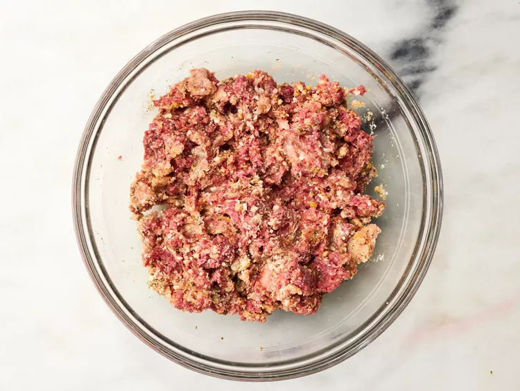
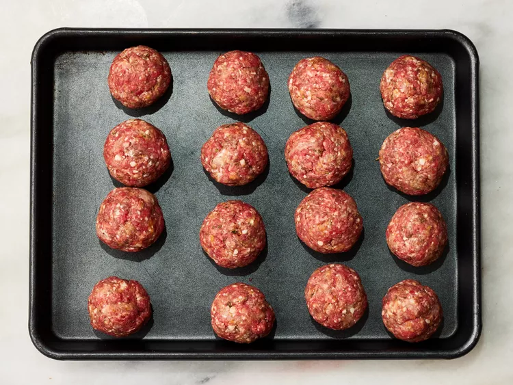
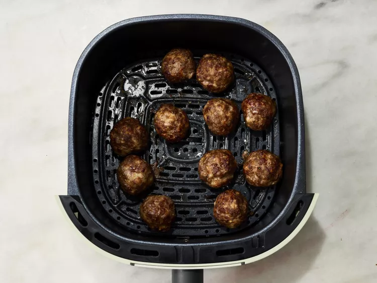

Home
Air Fryer Meatballs
Description
After trying air fryer meatballs, I will never bake them in the oven again.
The insides stay nice and tender while the outsides get a slight crisp on them.
The best part is that you can make them ahead of time and freeze for later use.
I have included those directions in the notes. Dip meatballs in marinara, if desired.
Your air fryer is the secret to perfect meatballs that are crispy on the outside,
but tender and juicy on the inside. You’ll come back to this air fryer meatball recipe again and again.
Ingredients
- 16 ounces lean ground beef
- 4 ounces ground pork.
- ½ cup grated Parmesan cheese.
- ⅓ cup Italian seasoned bread crumbs
- 1 egg
- 2 cloves garlic, minced
- 1 teaspoon Italian seasoning
- ½ teaspoon salt
Directions
- Preheat an air fryer to 350 degrees F (175 degrees C).
- Combine beef, pork, Parmesan cheese, bread crumbs, egg, garlic, Italian seasoning, and salt in a large bowl. Mix until evenly combined.

- Form into 16 equal meatballs (a small ice cream scoop is helpful) and place on a baking sheet.

- Place 1/2 of the meatballs in the basket of the air fryer and cook 8 minutes. Shake the basket and cook 2 minutes more. Transfer to a serving plate and let rest for 5 minutes. Repeat with remaining meatballs.

- Serve warm and enjoy!